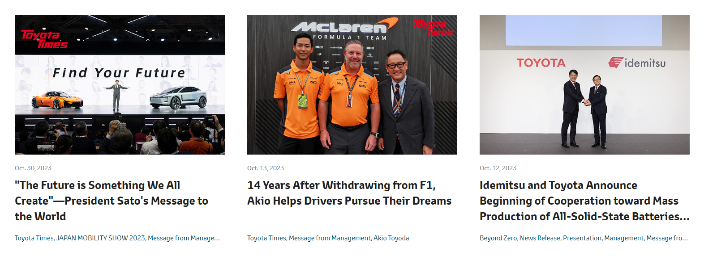

It was founded by Kiichiro Toyoda and incorporated on August 28, 1937. Toyota is one of the largest automobile manufacturers in the world, producing about 10 million vehicles per year. Toyota Group through cross ownership: Toyota Industries cross-owns 8.28%
Toyota was started in 1933 as a division of Toyoda Automatic Loom Works devoted to the production
of automobiles under the direction of the founder's son, Kiichiro Toyoda. [18] Its first vehiclesIwere
the A1 passenger car and the G1 in 1935. The Toyota Motor Co. was established as an independent
company in 1937. In 2008, Toyota's sales surpassed General Motors, making Toyota number one in
the world. [19] Mass production of Toyoda automated loom, displayed at the Toyota Museum in
Nagakute-cho, Aichi-gun, Aichi Pref.
Japan In 1924, Sakichi Toyoda invented the Toyoda Model G Automatic Loom
The principle of Jidoka, which means the machine stops itself when a problem occurs, became later a part of the Toyota Production System. Looms were built on a small production line. In 1929, the patent for the automatic loom was sold to a British company, generating the starting capital for the automobile development. [20] Toyoda Standard Sedan AA 1936 Vehicles were originally sold under the name "Toyoda" (???), from the family name of the company's founder, Kiichiro Toyoda. In April 1936, Toyoda's first passenger car, the Model AA, was completed. The sales price was 3,350 yen, 400 yen cheaper than Ford or GM cars. [21] House of Toyota founder Kiichiro Toyoda, near Toyota City[22] In September 1936, the company ran a public competition to design a new logo. Of 27,000 entries, the winning entry was the three Japanese katakana letters for "Toyoda" in a circle. But Risaburo Toyoda, who had married into the family and was not born with that name, preferred "Toyota" (???) because it took eight brush strokes (a lucky number) to write in Japanese, was visually simpler (leaving off the diacritic at the end) and with a voiceless consonant instead of a voiced one (voiced consonants are considered to have a "murky" or "muddy" sound compared to voiceless consonants, which are "clear"). Inside the house of Toyota founder Kiichiro Toyoda, near Toyota City Since "Toyoda" literally means "fertile rice paddies", changing the name also prevented the company from being associated with old-fashioned farming. The newly formed word was trademarked and the company was registered in August 1937 as the "Toyota Motor Company". [23][24][25] First-generation Toyopet Crown Model RSD (1955/1- 1958/10) Toyota at the Rally Dakar, 1992 From September 1947, Toyota's small-sized vehicles were sold under the name Toyopet" (?????). [26] The first vehicle sold under this name was the Toyopet SA,[27] but it also included vehicles such as the Toyopet SB light truck, Toyopet Stout light truck,[28]
